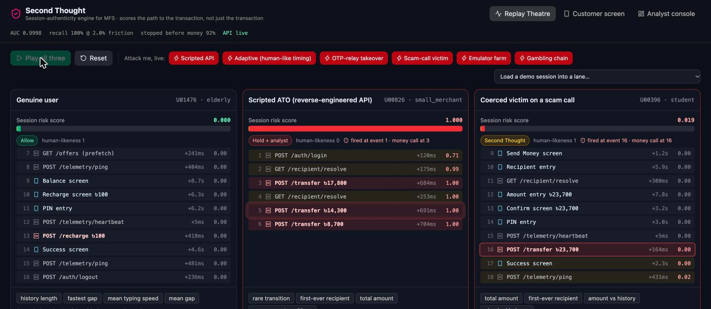
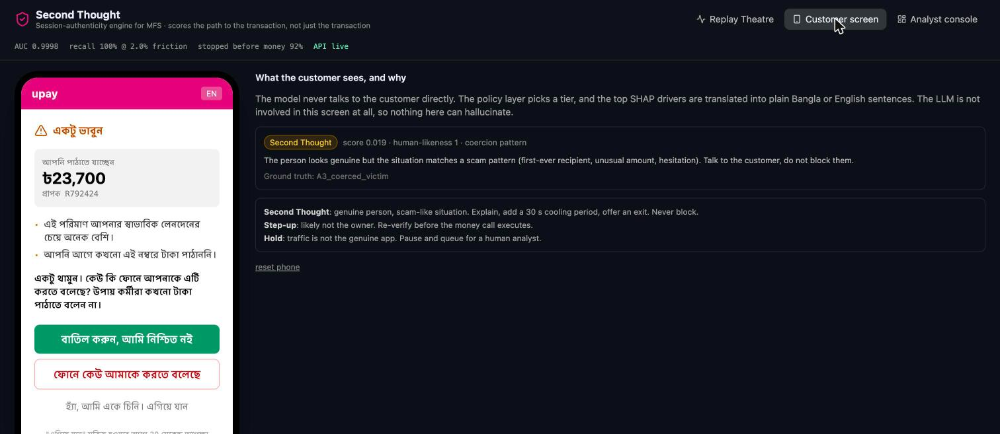
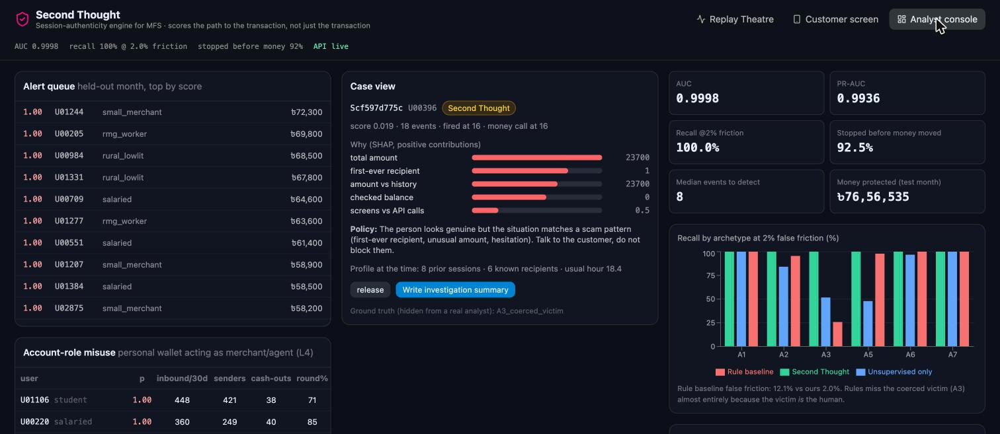

A session-authenticity engine that watches the clickstream an MFS already collects — API calls, screens, timing, and this user's own history — and stops account takeover and scam-coerced transfers before POST /transfer executes.
By the time POST /transfer reaches a fraud model, the attacker already owns the session. The path there — no screens, no telemetry, 150 ms between calls, a recipient this user has never paid, an amount 6σ above their history — was visible 5–10 events earlier.
Customers lose money and trust; upay absorbs disputes, chargebacks and reputational damage; analysts drown in alerts that arrive after the fact.
Structure: which events, in what order, what is missing (the real app always pings telemetry; a transfer without a PIN screen is a path skip).
Timing: gap statistics, sub-300 ms fractions, typing speed, hesitation.
Baseline: hours from this user's usual time, amount z-score vs their history, recipient novelty, pace vs their pace.
Allow · Second Thought: genuine person, scam-like situation → plain Bangla explanation, 30 s cooling, an exit · Step-up: likely not the owner → re-verify first · Hold: not the genuine app → pause, analyst decides.

Left: genuine user, score stays at 0. Middle: scripted ATO — held at event 1, before the first /transfer at event 3. Right: coerced victim — genuine device and rhythm, but first-ever recipient and ৳23,700 → Second Thought screen fires on the transfer request. "Attack me" generates a brand-new attack and scores it live.

Reasons come from SHAP drivers through a fixed sentence map — Bangla or English. No LLM on this screen, so nothing can hallucinate to a customer.

Queue ranked by money at risk, SHAP reasons, policy rationale, the user's profile at that moment, one-click actions, and an LLM summary grounded only in the evidence JSON.
| Archetype | Ours | Unsupervised only | Rules | Stopped before money | Detect / money event |
|---|---|---|---|---|---|
| A1 Scripted ATO via reverse-engineered API | 100% | 100% | 100% | 100% | 1 / 4 |
| A2 OTP-relay / SIM-swap takeover | 100% | 84% | 95% | 100% | 11 / 22 |
| A3 Coerced victim on a scam call | 100% | 52% | 26% | 97% | 14 / 18 |
| A5 Gambling / fake-purchase laundering | 100% | 48% | 98% | 44% | 14 / 11 |
| A6 Emulator farm | 100% | 97% | 100% | 100% | 8 / 14 |
| A7 Adaptive attacker (human-like timing) | 100% | 100% | 100% | 100% | 1 / 4 |
Synthetic data with injected patterns (documented): absolute numbers are optimistic; the relative results are the point.
A7 is exactly that: log-normal human-like gaps plus replayed telemetry. Timing stops helping. Still caught at event 1 of every session, because the path (no screens, no PIN screen before /transfer) and the user baseline (first-ever recipient, 6σ amount) survive mimicry.
We removed A5 from training entirely. The supervised model still caught 33%; the label-free Markov + Isolation Forest layer caught 48%. With A5 labelled: 100%. That gap is why the system is layered, and why analyst labels close the loop.
False friction on genuine users: elderly 0.8%, rural low-literacy 1.6%, feature-phone 2.1%, students 1.6%, 56+ 1.0%. The baseline compares each user with themselves, so slow is normal for a slow user. Demographics are never inputs.
Rules: 82.7% recall at 12.1% friction, 26% on coerced victims. Rules cannot see a genuine human in a scam; a per-user baseline can.
Behavioural metadata only. No PII features. The LLM only ever sees our evidence JSON — no prompt-injection surface. Keys in env; the engine has no write access to ledgers.
Nothing is permanently blocked by a model. Hold and step-up go to a person with release / step-up / freeze / call. Every alert carries SHAP reasons and a rule trace.
৳80.1 lakh at risk across 399 fraudulent sessions · ৳76.6 lakh protected before money moved · at 2% friction, ~250 genuine sessions saw a 30-second confirm screen; none were blocked.
Per 1M active users at a realistic 0.3% fraud session rate, the same ratios imply tens of crores protected per year and a measurable drop in dispute volume. We would validate those economics in shadow mode, not claim them now.
The data already exists in the step-tracker. The engine is a sidecar: no SDK, no new instrumentation. The policy tier becomes one synchronous call before confirm, p99 budget under 50 ms. Second Thought copy is Bangla-first for the users scams target most.
Roadmap: sequence model (GRU) as L6, device-graph features, typed-decision layer for the tier choice.
Second Thought · live demo, open repo, reproducible metrics, every prompt logged.
Python · LightGBM · SHAP · FastAPI · React · synthetic data only · built solo in 4 hours with Claude Code